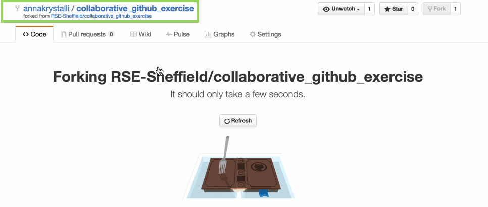
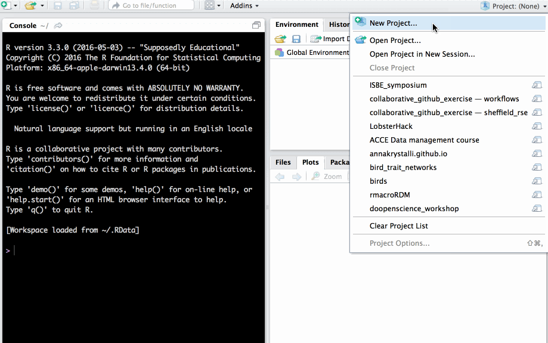
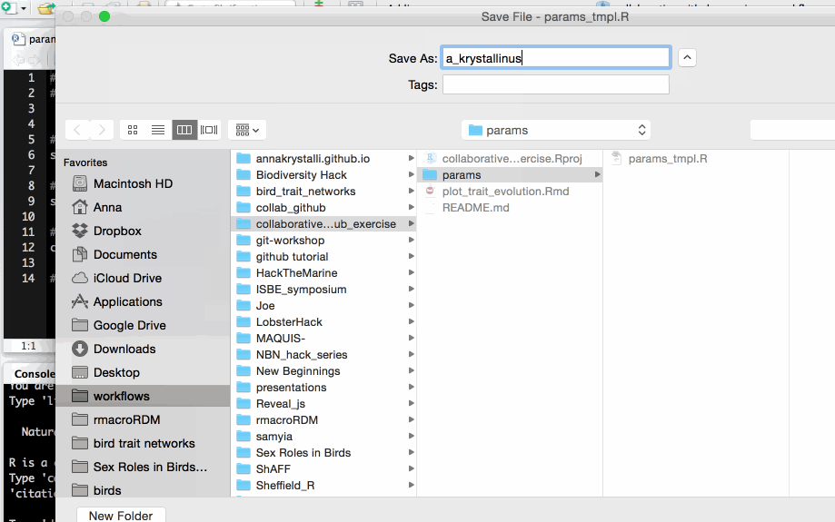
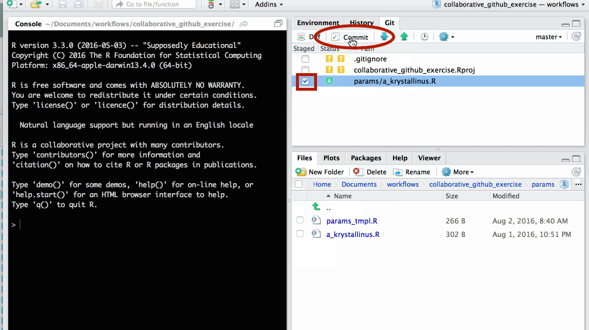
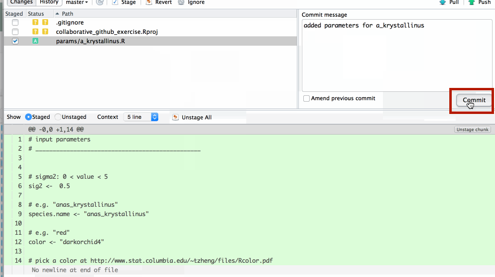
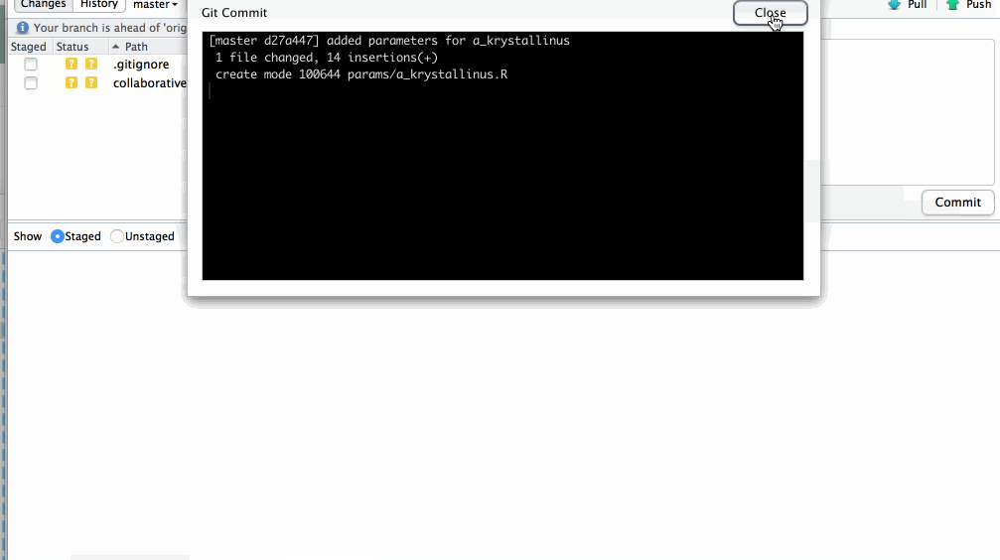
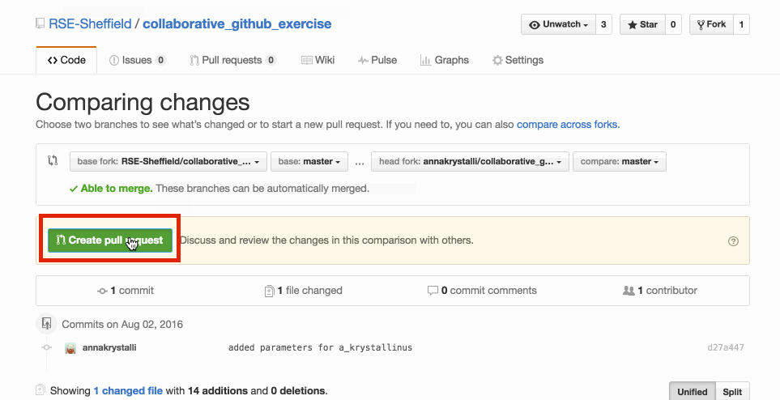

Practical: GitHub & Rstudio for collaborative coding
Last updated: 2019-04-09
Checks: 5 1
Knit directory: rrresearch/
This reproducible R Markdown analysis was created with workflowr (version 1.2.0). The Report tab describes the reproducibility checks that were applied when the results were created. The Past versions tab lists the development history.
The R Markdown is untracked by Git. To know which version of the R Markdown file created these results, you’ll want to first commit it to the Git repo. If you’re still working on the analysis, you can ignore this warning. When you’re finished, you can run wflow_publish to commit the R Markdown file and build the HTML.
Great job! The global environment was empty. Objects defined in the global environment can affect the analysis in your R Markdown file in unknown ways. For reproduciblity it’s best to always run the code in an empty environment.
The command set.seed(20190216) was run prior to running the code in the R Markdown file. Setting a seed ensures that any results that rely on randomness, e.g. subsampling or permutations, are reproducible.
Great job! Recording the operating system, R version, and package versions is critical for reproducibility.
Nice! There were no cached chunks for this analysis, so you can be confident that you successfully produced the results during this run.
Great! You are using Git for version control. Tracking code development and connecting the code version to the results is critical for reproducibility. The version displayed above was the version of the Git repository at the time these results were generated.
Note that you need to be careful to ensure that all relevant files for the analysis have been committed to Git prior to generating the results (you can use wflow_publish or wflow_git_commit). workflowr only checks the R Markdown file, but you know if there are other scripts or data files that it depends on. Below is the status of the Git repository when the results were generated:
Ignored files:
Ignored: .DS_Store
Ignored: .Rhistory
Ignored: .Rproj.user/
Ignored: analysis/.DS_Store
Ignored: analysis/assets/
Ignored: assets/
Ignored: data/metadata/
Ignored: data/raw/
Ignored: demos/demo-rmd-0_files/
Ignored: demos/demo-rmd-1_files/
Ignored: demos/demo-rmd_files/
Ignored: docs/.DS_Store
Ignored: docs/assets/.DS_Store
Ignored: docs/assets/img/.DS_Store
Ignored: docs/demo-rmd-0_files/
Ignored: docs/demo-rmd-1_files/
Ignored: docs/demo-rmd-2_files/
Ignored: docs/demo-rmd-3_files/
Ignored: docs/demo-rmd_files/
Ignored: docs/index-demo-pre_files/
Ignored: slides/libs/
Untracked files:
Untracked: analysis/08_evolottery.Rmd
Untracked: analysis/10_pkg_functions.Rmd
Untracked: figure/
Untracked: install.R
Untracked: rmd/
Untracked: slides/07_collab_gh.Rmd
Unstaged changes:
Modified: analysis/_site.yml
Modified: render-other.R
Note that any generated files, e.g. HTML, png, CSS, etc., are not included in this status report because it is ok for generated content to have uncommitted changes.
There are no past versions. Publish this analysis with wflow_publish() to start tracking its development.
Welcome to the evolutionary lottery of skull and beak morphology
#EvoLottery
Beak and skull shapes in birds of prey (“raptors”) are strongly coupled and largely controlled by size.
In this exercise, each participant will fork a GitHub repo, and contribute a file required to simulate the evolutionary trajectory of an imaginary species’ body size.
We’ll use GitHub to collate all species files and plot them all up together at the end! We’ll also discover the skull and beak shapes associated with each simulated species size.
Start!
üíª Clone a GitHub repo
Start with GitHub repo
https://GitHub.com/RSE-Sheffield/collaborative_GitHub_exercise
Fork it
make your own copy of the repository on GitHub. Fork are linked and traceable

GitHub makes a copy into your account

üö¶ Clone repo
copy repo link to create a new Rstudio project from the repository.
Create new project in Rstudio

Checkout from version control repository

Clone project from a git repository
Paste repo link copied from GitHub into Repository URL field. Click Create Project.

Rstudio project now contains all files from the GitHub repo.

üö¶ Make a change to the repo
make a copy of params_tmpl.R
open params/params_tmpl.R
.R script in params/ folder
Use species name of your choice to name new file.
params/params_tmpl.R.

üö¶ Edit file
Edit file with parameters of your choice and save.
The parameters each participants need to supply are:
sig2: A numeric value greater than 0 but smaller than 5species.name: a character string e.g."anas_krystallinus". Try to create a species name out of your name!color: a character string e.g."red","#FFFFFF"(Check out list of colours in R)
NB: remember to save the changes to your file
üö¶ Commit changes locally to git
In the git tab, select the new file you created and click Commit.

Write an informative commit message and click Commit

your new file has now been commited

Push changes to GitHub
on the git tab click ⇧ to push changes to GitHub

changes have now been updated in the GitHub repo

üö¶ create pull request
In your repository, create new pull request to merge fork to master repo (ie the original repo you forked)
GitHub checks whether your requested merge creates any coflicts. If all is good, click on Create pull request

Write an informative message explaining your changes to the master repo administrators. Click on Create pull request

The repository owner will then review your PR and either merge it in or respond with some guidance if they spot a problem.
Check original repo to see your merged changes

We’ll merge all contributions and plot them together at the end!
R version 3.5.2 (2018-12-20)
Platform: x86_64-apple-darwin15.6.0 (64-bit)
Running under: macOS Mojave 10.14.3
Matrix products: default
BLAS: /Library/Frameworks/R.framework/Versions/3.5/Resources/lib/libRblas.0.dylib
LAPACK: /Library/Frameworks/R.framework/Versions/3.5/Resources/lib/libRlapack.dylib
locale:
[1] en_GB.UTF-8/en_GB.UTF-8/en_GB.UTF-8/C/en_GB.UTF-8/en_GB.UTF-8
attached base packages:
[1] stats graphics grDevices utils datasets methods base
loaded via a namespace (and not attached):
[1] workflowr_1.2.0 Rcpp_1.0.1 lubridate_1.7.4
[4] emo_0.0.0.9000 crayon_1.3.4 assertthat_0.2.0
[7] digest_0.6.18 rprojroot_1.3-2 backports_1.1.3
[10] git2r_0.24.0.9001 magrittr_1.5 evaluate_0.13
[13] rlang_0.3.1 stringi_1.3.1 rstudioapi_0.9.0
[16] fs_1.2.7 rmarkdown_1.12 tools_3.5.2
[19] stringr_1.4.0 glue_1.3.1 purrr_0.3.2
[22] xfun_0.5 yaml_2.2.0 compiler_3.5.2
[25] htmltools_0.3.6 knitr_1.22